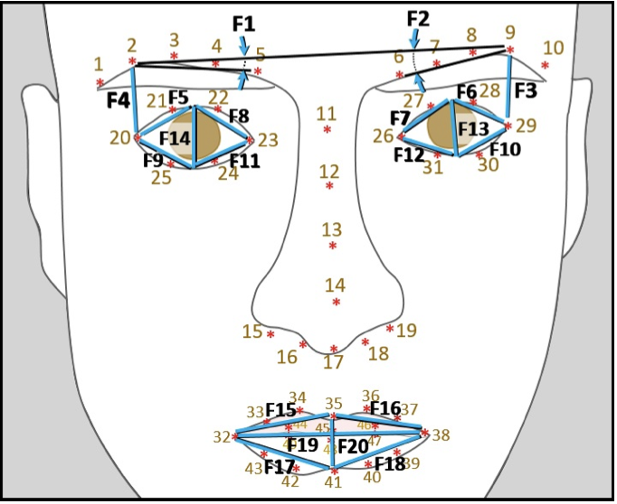
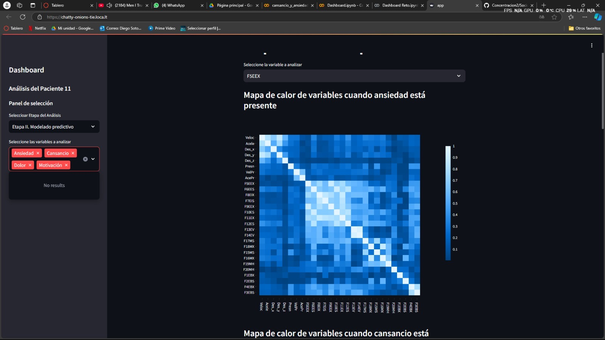
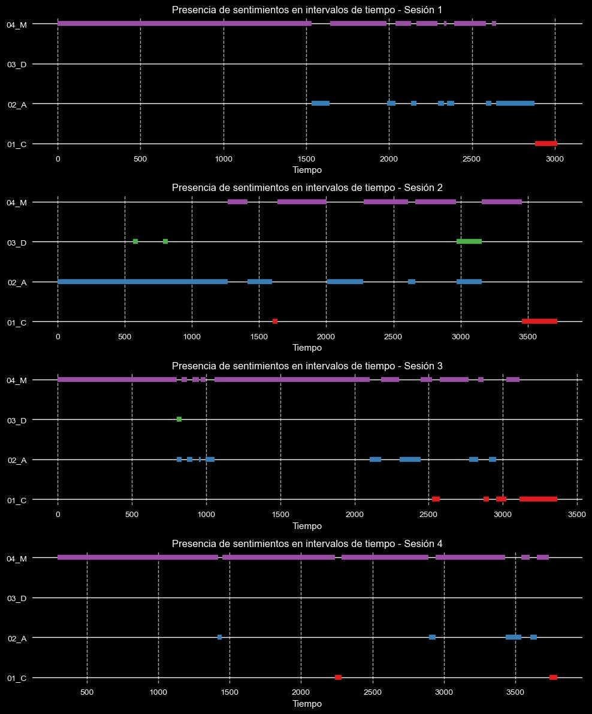
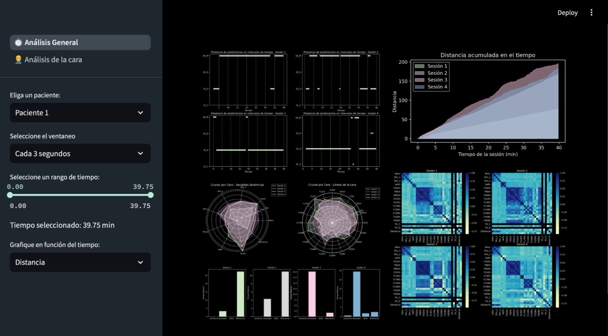

Situation
This rehabilitation system integrates virtual reality technology with dynamic therapeutic exercises, such as cleaning a virtual mirror, to support patients in recovering facial mobility. The system allows patients to perform real-life movement simulations while interacting through a joystick and facial tracking sensors.
We collaborated in analyzing behavioral and emotional data from three patients throughout their rehabilitation sessions. The dataset consisted of 32 variables and 1,115 time-based records, representing variations during therapy sessions.
The variables included:
- Facial tracking points
- Emotional state classification
- Session time and duration
- Session number
- Patient ID
- Session date
The data was heterogeneous and required structuring before meaningful insights could be extracted.


For more details about the research context, visit the Multi-Label Rehabilitation Paper (PDF) .
Task
The primary challenge was cleaning, standardizing, and interpreting multi-label emotional and performance data in a way that could generate actionable insights for researchers. The raw dataset contained missing values, inconsistencies, and required preprocessing before analysis.
Our objective was to transform this raw dataset into a structured and visual analytics platform that would facilitate clinical interpretation and data-driven research decisions.
As an initial step, we performed extensive data cleaning, null value replacement, normalization, and backend automation to generate a reliable dataset. After standardizing the data, we designed a dashboard mock-up to define visualization structure and user interaction.

Action
Initially, we explored multiple hypotheses regarding which variables could better explain rehabilitation progress. We conducted thorough exploratory data analysis to understand historical behavior and correlations between variables.
We developed an interactive heatmap allowing researchers to dynamically select variables and visualize correlations between emotional states and rehabilitation performance indicators.
Through this analysis, we identified that emotional variables such as Motivated (04_M) and Anxiety (02_A) showed significant relationships with performance improvements across sessions.
The distribution analysis revealed emotional progression patterns correlated with therapy improvement over time.
Result
As a result of strong collaboration with researchers and faculty advisors, we developed an interactive dashboard using Streamlit, enabling real-time visualization of processed rehabilitation data.
The platform synthesized complex multi-label emotional data into accessible visual insights, making the information understandable even for non-technical stakeholders.
Key findings showed that, over time, facial tracking point distances decreased, suggesting measurable progress in paralysis reduction and motor control recovery.
You can find the dashboard user manual here: Dashboard Manual (PDF - Spanish Version)
Tools
- Languages: Python
- Libraries: Pandas, NumPy, Matplotlib, Seaborn, Scikit-Learn
- Data Techniques: EDA, Standardization, Multi-Label Modeling
- Visualization & Deployment: Streamlit
- Version Control: GitHub
Team

- César Alejandro Rivera Guzman
- Julio Sotero
- Diego Soto
- Faculty Advisors: Dr. Rigoberto Cerino Jiménez & Dr. Juan Manuel Ahuactzin Larios
Repository
GitHub: Access Code Repository